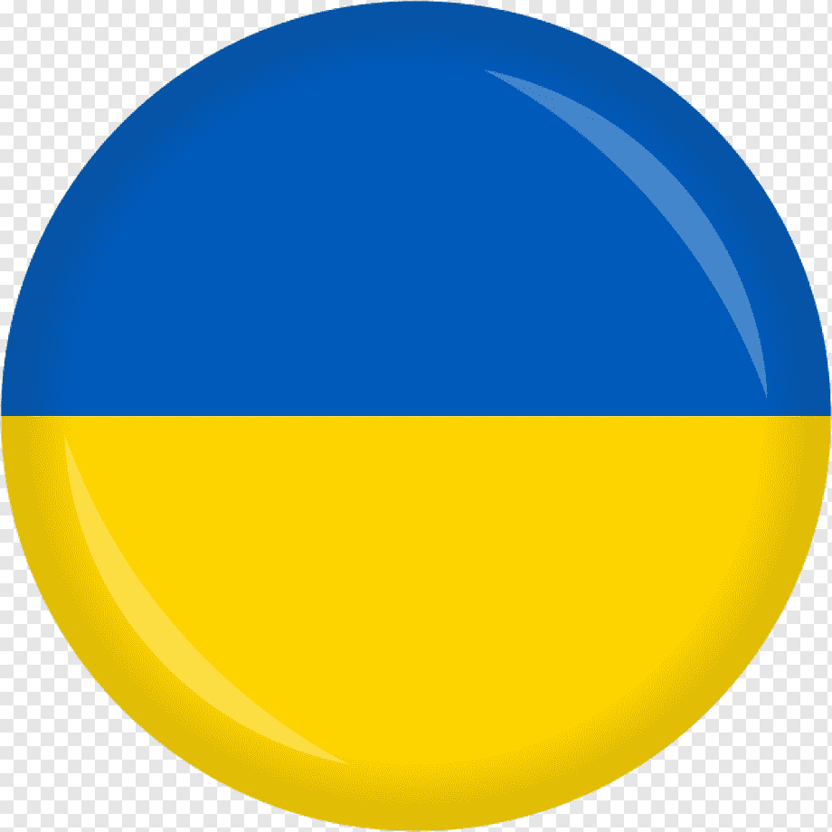

Trainee/Junior Unity Developer
Language resume
- Українська 
- English
About me
I am a young professional with an interest in the game development industry. My significant experience in this field was my participation in the Game Jam competition, where I, together with a team of three classmates, developed a game that was awarded the title 'The game that the judges will play after the Game Jam'. This project allowed me to expand my knowledge of game development, as well as develop teamwork, creative thinking, and problem-solving skills. I am passionate about the gaming industry and want to continue developing in this field.
Education
-
Kharkiv National University of Economics
121 "Software engineering" | Studying
-
Kharkiv Radio Engineering College
121 "Software engineering" | 28.06.2023
-
Online school "HeadLight School"
"Unity Developer" | 20.08.2022
Skills
- Git;
- MySQL;
- С# and Unity;
- Adobe Photoshop;
- 2D and 3D animation experience in Unity.
Additional skills
- Experience with Unity API, Coroutines, Mesh-Agent, Animations-Event;
- Understanding the principles of OOP;
- Ability to use design templates;
- Understanding of Scrum and Kanban methodologies;
- Development environments used: Visual Studio/Code, PyCharm, Unity;
- Basic knowledge Python, JAVA, HTML, CSS, and JS.
My projects
-
Course work
2D platformer "RABBIT" (C#, Unity) In this project all scripts are written in C#. I use 2d animation, calling it inside the code, the main classes of the Unity API.
-
The game was developed by the team during the Game Jam 2023 competition
2D root crop simulator "Under Tree" (C#, Unity) This project was developed by a team of four people, my personal task was UI design, animation, and functionality of the bugs. As well as testing and creating bug reports.
-
Diploma project
3D Survival Game "Kill Or Die" (C#, Unity) I developed this project for my diploma, I did it for about 3 months, I wrote the music myself, I made several 3D models and textures, and used mesh-agent, coroutines, raycast, Animation Events, OOP principles and design patterns in the code.